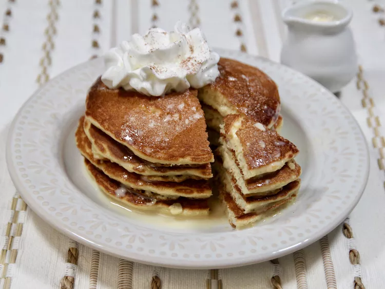

Tres Leches Pancakes

Description
"Tres Leches Pancakes" are a variation of traditional pancakes or hotcakes
that are prepared by soaking them in a mixture of three types of milk,
typically evaporated milk, sweetened condensed milk, and heavy cream.
These pancakes are known for being soft, moist, and sweet due to the
combination of the three milks, which imparts a delicious flavor and a fluffy
texture. They are usually served with syrup, fruits, or whipped cream to add
an extra touch of sweetness and flavor. They are a popular dessert in Latin
American cuisine and are enjoyed in many parts of the world.
Ingredients
Sauce
- 2/3 cup sweetened condensed milk
- 1/2 cup evaporated milk
- 1/3 cup half and half
Pancakes
- 1 (15.25 oz) box French vanilla cake mix (such as Betty Crocker™ Super Moist French Vanilla Cake Mix)
- 1 1/4 cups almond milk
- 3 large eggs, lightly beaten
- 4 tablespoons vegetable oil, divided
- 1/2 cup whipped cream, or as needed (optional)
- 1/4 teaspoon ground cinnamon, or as needed (optional)
Steps
-
Combine sweetened condensed milk, evaporated milk, and half
and half in a small saucepan and set over medium heat. Bring
to a boil, stirring constantly for 3 to 4 minutes. Remove
from heat and let cool. This is a sauce, not a syrup, so
consistency will be on the thinner side.
-
Add cake mix, almond milk, eggs, and 3 tablespoons vegetable
oil to a large bowl, and beat vigorously by hand for 2 minutes.
-
Heat a large skillet or griddle over medium heat, and lightly
coat with remaining vegetable oil. Add 1/4 cup of the batter
for each pancake. Cook until edges begin to puff up, small
bubbles appear, pop, and leave small holes, 2 to 3 minutes.
Flip pancakes and cook until golden brown on the other side,
about 2 minutes more.
-
Serve pancakes warm with a drizzle of the tres leches sauce,
a dollop of whipped cream, and sprinkle of cinnamon.